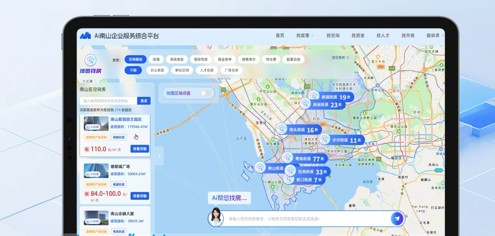
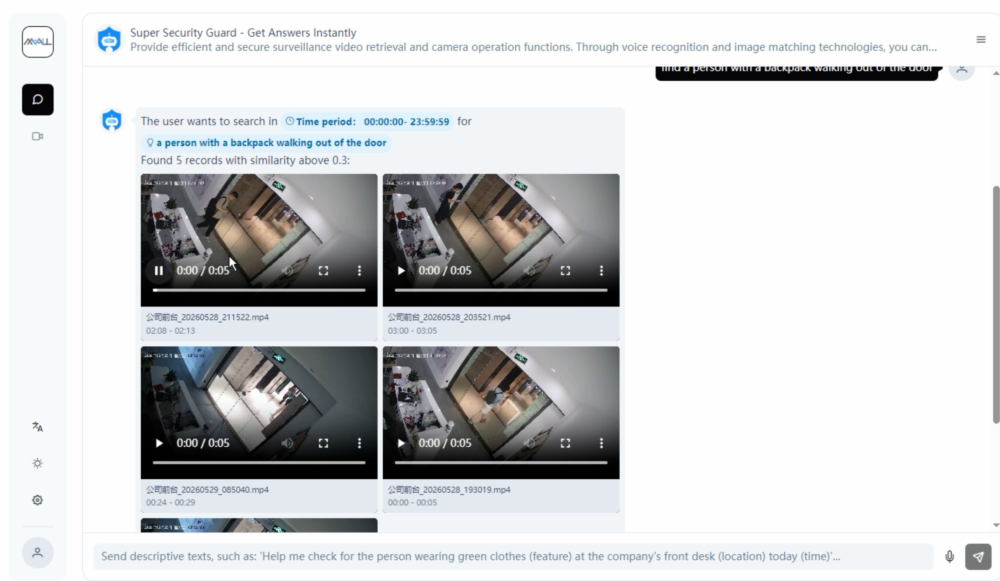

LLMs integrated with your enterprise systems.
Talk to your data. ChatX turns fragmented store signals into strategic insight, in plain language.
01 Capabilities
Ask questions in plain language across your live retail data.
Answers come back as charts and dashboards, not spreadsheets.
Sub-second responses over connected POS, WMS and ERP systems.
Ground every decision in what is actually happening on the floor.
02 How it works
Pose a question the way you would ask a colleague.
LLMs connect the dots across your enterprise systems.
Insight is returned with a recommended next step.
03 Feature spotlight
ChatBI, ChatX's conversational layer, swaps dashboards for a conversation. Ask "How many jackets sold today?" or "Which store had the longest queues yesterday?" and you get an answer, with a chart to back it up, pulled straight from your POS, WMS and ERP.

04 Feature spotlight
ChatX can talk to your video too. Ask it something like "show every time the fire exit was blocked" and it takes you straight to those moments. It runs on-premises or in a private cloud, so nothing sensitive leaves the building.

05 In the field
06 Results
07 Why it's different
“Most BI tools make you learn the tool first. ChatX just answers the question, in plain language, and points you to where the number came from.”
ChatX · Private ChatBI
Share your scenario and our team will craft a rollout plan for your stores.
Get a Solution